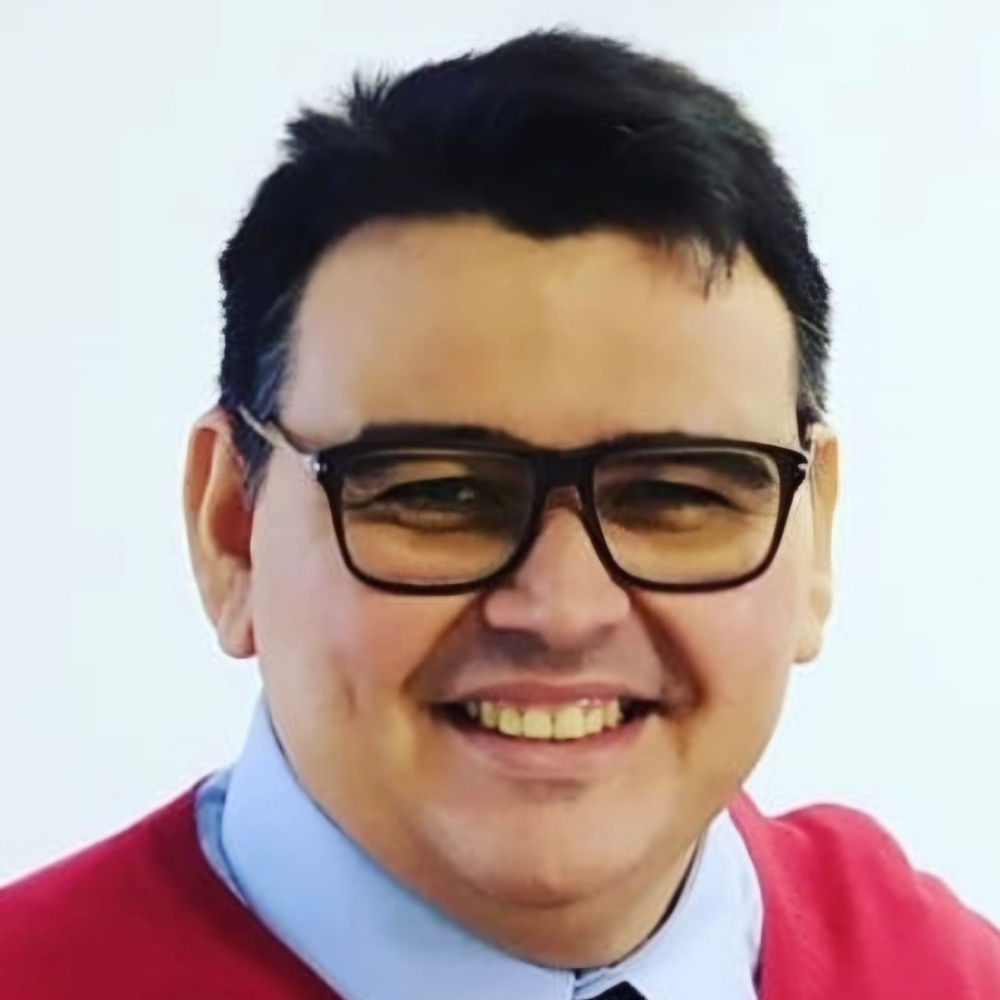
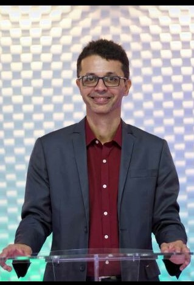

Preletores

Rev. Francisco Macena da Costa
Rev. Francisco Macena da Costa é pastor presbiteriano, casado com Dani e pai de três filhos. Atua como professor no Seminário Presbiteriano do Norte (SPN), lecionando Teologia Sistemática, Teologia Histórica e Conhecimentos Gerais. Além disso, colabora com a educação cristã na Igreja Presbiteriana de Boa Viagem.
Rev. Francisco Macena da Costa é pastor presbiteriano, casado com Dani e pai de três filhos. Atua como professor no Seminário Presbiteriano do Norte (SPN), lecionando Teologia Sistemática, Teologia Histórica e Conhecimentos Gerais. Além disso, colabora com a educação cristã na Igreja Presbiteriana de Boa Viagem.

Rev. Wendell Gonzaga
Wendell Gonzaga é pastor titular da Igreja Presbiteriana do Engenho do Meio, professor de Apologética, Filosofia e Teologia Sistemática nos seminários FATIN e SETEPEB, além de lecionar no ensino fundamental do Mackenzie-Agnes. Bacharel em Teologia pelo SPN, é pós-graduado em Aconselhamento Bíblico (SPN) e Teologia Filosófica (Unifil), com mestrados em Divindade (CPAJ) e Bacharel em Filosofia (Unicap). Também atua no projeto Soli Deo Gloria, discipulando jovens universitários, e apoia a iniciativa do SPN em preparar estudantes para os desafios acadêmicos.
Wendell Gonzaga é pastor titular da Igreja Presbiteriana do Engenho do Meio, professor de Apologética, Filosofia e Teologia Sistemática nos seminários FATIN e SETEPEB, além de lecionar no ensino fundamental do Mackenzie-Agnes. Bacharel em Teologia pelo SPN, é pós-graduado em Aconselhamento Bíblico (SPN) e Teologia Filosófica (Unifil), com mestrados em Divindade (CPAJ) e Bacharel em Filosofia (Unicap). Também atua no projeto Soli Deo Gloria, discipulando jovens universitários, e apoia a iniciativa do SPN em preparar estudantes para os desafios acadêmicos.

Rev. Lutero Rocha
Me chamo Herculles Albuquerque, sou casado com Flávia e pai do Pedro (7 anos); Sou missionário na Palavra da Vida Nordeste, onde coordeno o Projeto Marcos; Na IPB Boa Viagem, eu pastoreio os adolescentes, aconselhando e treinando liderança; também lidero a parte de música desta igreja, servindo ao Senhor no canto congregacional; Sou bacharel em Teologia pelo SBPV (Atibaia), pós-graduado em Aconselhamento Bíblico (SBPV), em Teologia Sistemática (SPN) e Pregação Expositiva (SPN); Além disso, estou concluindo o curso de Licenciatura em História (UPE);
Me chamo Herculles Albuquerque, sou casado com Flávia e pai do Pedro (7 anos); Sou missionário na Palavra da Vida Nordeste, onde coordeno o Projeto Marcos; Na IPB Boa Viagem, eu pastoreio os adolescentes, aconselhando e treinando liderança; também lidero a parte de música desta igreja, servindo ao Senhor no canto congregacional; Sou bacharel em Teologia pelo SBPV (Atibaia), pós-graduado em Aconselhamento Bíblico (SBPV), em Teologia Sistemática (SPN) e Pregação Expositiva (SPN); Além disso, estou concluindo o curso de Licenciatura em História (UPE);

Rev. Sérvulo Silva
Ministro do Evangelho na Igreja Presbiteriana do Brasil, pastoreando, efetivamente, a Igreja Presbiteriana Pedras Vivas (Recife-PE). Graduado em Teologia pelo Seminário Presbiteriano do Norte e pela Universidade Católica de Pernambuco. Plantador de igreja há 15 anos. Casado com Thais e pai de André, Darah e Hadassa.
Ministro do Evangelho na Igreja Presbiteriana do Brasil, pastoreando, efetivamente, a Igreja Presbiteriana Pedras Vivas (Recife-PE). Graduado em Teologia pelo Seminário Presbiteriano do Norte e pela Universidade Católica de Pernambuco. Plantador de igreja há 15 anos. Casado com Thais e pai de André, Darah e Hadassa.